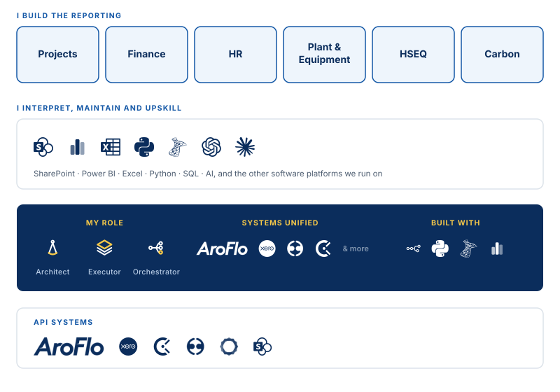
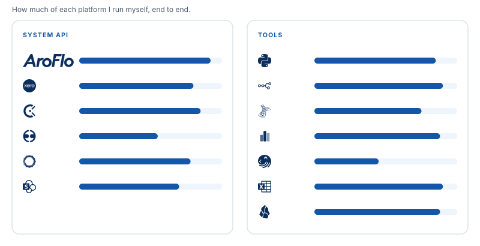
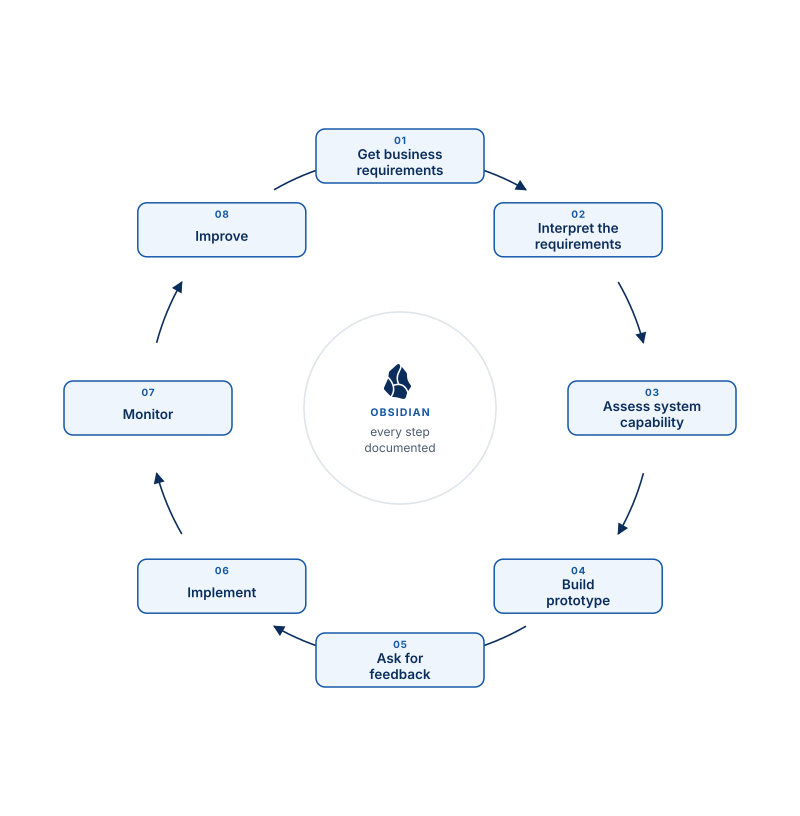
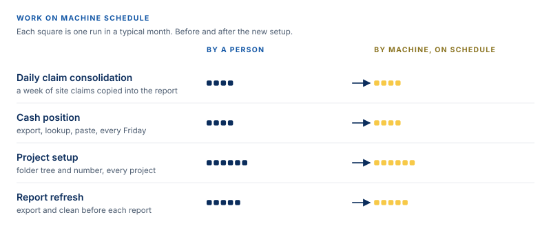
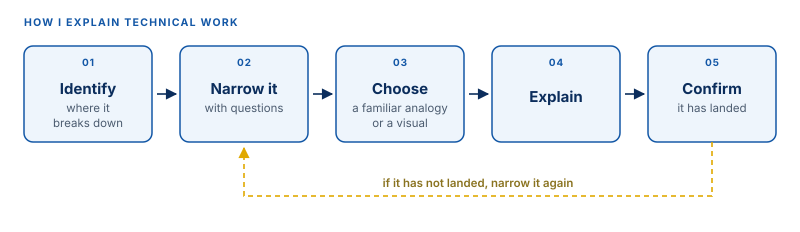

Section 1: Job knowledge, responsibilities and tasks
Scope What the job covers

Knowledge The platforms and tools I work in

Tasks and responsibilities How work gets done

System flow How the data moves
![Diagram: six source systems are read on a schedule by n8n cloud flows and a separate Python full extract, both started and restarted by Dagster. Raw files land in SharePoint before anything is processed, sync down to a workstation where Python watchers pick them up, and Python loaders write them into two SQL Server databases, an incremental one and a full loading one, that are compared against each other every morning. Power BI reads from the databases, and some reports still read the SharePoint files directly.](../assets/img/journal-pipeline.svg)
Section 2: Performance and contribution
Reports What leadership opens
| Level | Report | Platform | Pages / sheets | Phase | Contribution |
|---|---|---|---|---|---|
| Company | D&S Company Level Reports | Power BI | 8 | In Production | Company financial report including HR and HSEQ |
| Project | AROFLO Projects Summary Data Modeling | Power BI | 17 | In Production | Give details and bird-eye overview about project financial health |
| Project | AROFLO Projects Summary Data Modeling-SQL | Power BI | 17 | Finalizing | Incremental loading method for future efficiency |
| Project | AROFLO Projects Summary Data Modeling - Dagster-SQL | Power BI | 17 | Finalizing | Applying Dagster for better system management |
| Project | Major Projects Report (DNS-11243) | Power BI | 16 | In Production | Give details and bird-eye overview about Major Projects financial health |
| Project | Major Projects Report (DNS-11170) | Power BI | 16 | In Production | Give details and bird-eye overview about Major Projects financial health |
| Project | Major Projects Report (DNS-11084) | Power BI | 16 | In Production | Give details and bird-eye overview about Major Projects financial health |
| Project | Project Schedule | Excel | 1 | In Production | Project progression and project financial overview |
| Plant & Equipment | GEARBOX_D&S Equipment tracker | Excel | 3 | In Production | Fleets and machine kms and hrs |
| HR | Workforce Management Registry | Excel | 8 | under Review | Timesheet, leave and fatigue management |
| Carbon | EMS Tracker Report | Excel | 5 | In Production | Scope 1 and 2 of CO2 emissions report |
| Project | QUOTATION TEMPLATE Ver 1 | Excel | 5 | under Review | Quote template |
| 12 reports | 129 |
Workflows What runs without anyone starting it
| Source system | Platform | Workflows | Running |
|---|---|---|---|
| AroFlo | n8n (cloud) | 20 | 18 |
| Xero | n8n (cloud) | 8 | 5 |
| Employment Hero | n8n (cloud) | 3 | 0 |
| Gearbox | n8n (cloud) | 1 | 1 |
| SharePoint only / internal | n8n (cloud) | 21 | 10 |
| Learning & scratch | n8n (cloud) | 6 | 0 |
| Total | 59 | 34 |
Counted from the live n8n instance, following the API cursor to the last page.
Code What I wrote and maintain
| What it does | Language | Files | Lines |
|---|---|---|---|
| Extract from API | Python | 6 | 2,859 |
| Authentication | Python | 1 | 134 |
| Transform | Python | 4 | 843 |
| Load to database | Python | 5 | 1,474 |
| Watch & trigger | Python | 2 | 947 |
| Validate & monitor | Python | 6 | 1,311 |
| Draft / utility | Python | 4 | 1,252 |
| Total | 28 | 8,820 |
Measured from the files themselves. Blank lines and comments excluded. Every figure above is counted from the rows beside it.
Section 3: Productivity
Time efficiency Tasks on cloud and machine schedule

Objectives Achieved
260 GB
SharePoint storage reduced
498 GB
D&S Resources data backed up
1 day
DNS-11170 Daily Cost Summary, built
Section 4: Communication
Method How I explain technical work

Section 5: The role
Disciplines What the job covers

Get in touch
Happy to walk through any of this in more detail: how it was approached, or what I would do differently now.
Adelaide, South Australia · ACST (UTC+9:30)